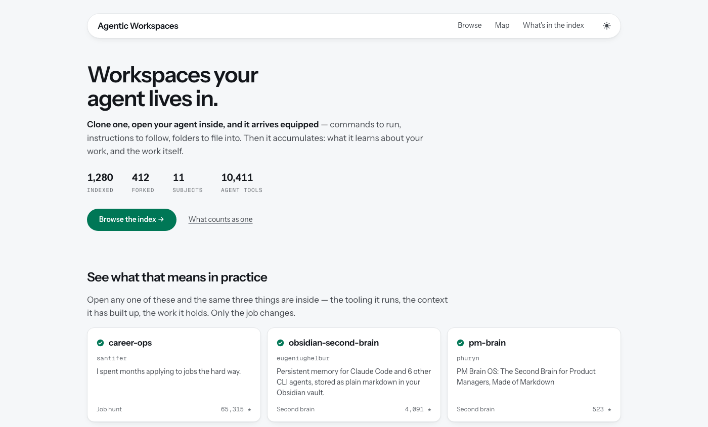

Agentic Workspaces
A front door for agentic workspaces: the repos you clone and work inside, findable by the job you need one for.
An agentic workspace is a repo you clone to live in rather than to run: your agent arrives equipped, and your work accumulates inside. These repos have no marketplace, so people find them by accident. The index is the front door, and you browse it by the job you need one for.

- Built with
- TypeScript · Node ≥20 · Vitest · GitHub Actions · a static generator over one JSON file, no framework and no client-side fetching
- Status
- Live and actively developed. Every entry is found by a crawler rather than added by hand.
- Repo
- Private while it’s being built.